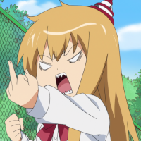

Este texto aparece antes da imgagem a quela vai ser alinha a esquerda.
Esta frase está na mesma linha da imagem pelo que fica a sua direita
O parametro da limpeza faz ultrapassar a imagem
texto pre formatado
este bocado de texto tem muitos expaços e mudança de linha
Contato Referencia de exercicio.